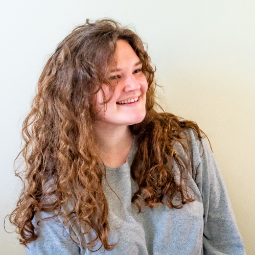

Emma Coleman

About
I am a visual storyteller based in Lexington, Virginia, where I am studying journalism and photography at Washington & Lee University.
My coursework is supported by reporting internships and a work-study position as a student campus photographer. Both journalism and photojournalism experiences have exposed me to a variety of people and events. I've covered everything from high school basketball games to local government ordinances.
I enjoy documentary photography, but my heart also holds a special place for fine art. I have experience in both the darkroom and Adobe interfaces. My most recent projects investigate the manipulation of archival images. I also practice portraiture - for both people and pets.
Journalism Experience
The Rockbridge Report is a weekly news broadcast televised in Rockbridge County, Virginia. The broadcast, along with a news website and social media platforms, is run by journalism students, professors and faculty at W&L. In the fall of 2019, I covered Lexington, health and religion for the broadcast.
For 10 weeks, I wrote web stories on state elections and city chicken ordinances. I recorded and edited broadcast packages about Lexington's new city manager and an imam's visit to local churches and universities, which can be viewed below. I also performed live stand-ups and completed a recorded, in-studio interview. The experience taught me interview techniques for public officials, local government reporting and audio and video techniques.
">
Contact
Check out my photography on Instagram at @emmacolemanphotography. If you are interested in a portrait session, or if you need a photographer for any event, contact me at (443) 564-0751 or emmkatecoleman@gmail.com.